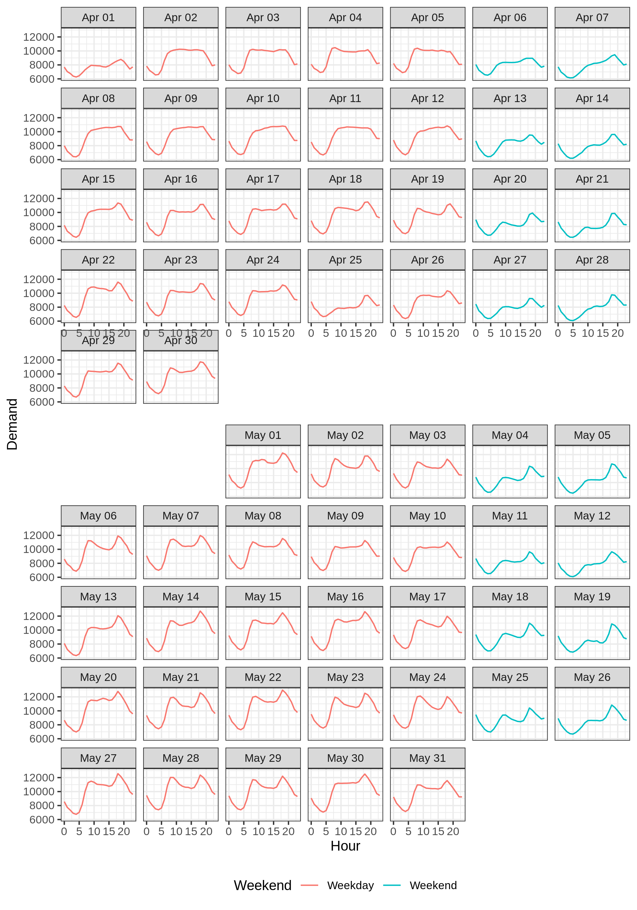
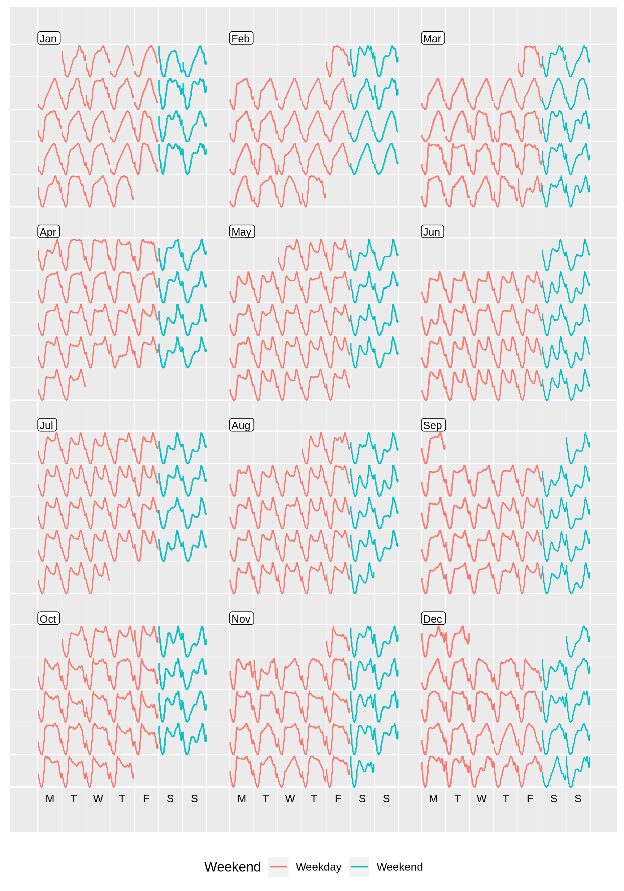
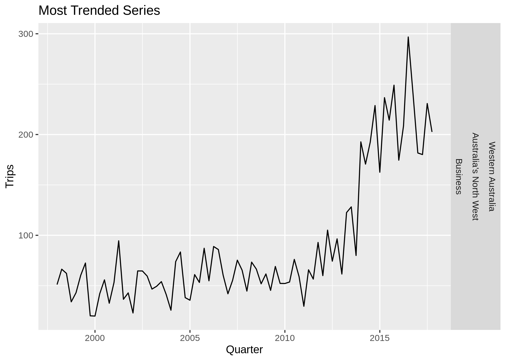

Exploratory Analysis of Time Series Data with Tidyverts
Into to Tidyverts
Last month, I attended rstudio::conf 2020 and took Rob J Hyndman’s awesome Tidy Time Series and Forecasting in R workshop. Professor Hyndman highlighted functionality within the Tidyverts packages for exploring and extracting features from time series datasets.Tidyverts is currently comprised of three main packages and works within the Tidyverse framework (i.e. piping and dplyr functions).
- Tsibble- Makes data wrangling and formatting of time series data easier. Formats time series data into a “tsibble” R object so other packages within Tidyverts know how to handle it.
- Feasts- Used for extracting features from time series data. Has many useful functions for extracting statistics from a time series that can be used for exploratory analysis, model checking, and comparison.
- Fable- Simplifies the creation for forecasting models for time series data.
I will review and expand on the exploratory data analysis techniques, primarily using tsibble and feasts, learned at rstudio::conf in this post. The workshop changed my perspective on how time series data can be explored, from a simplistic format with limited options (pretty much just line graphs) to a still growing discipline with room for creative solutions. Tidyverts lets you squeeze more insight from a simple time series than I thought possible.
Creating a Tsibble Object
To begin using the Tidyvert packages, you first need to convert your data into a tsibble object. I will demonstrate this using a dataset showing quarterly Australian tourism totals by State, Region, and purpose that can be found here.
head(tourism)## # A tibble: 6 x 5
## Quarter Region State Purpose Trips
## <date> <chr> <chr> <chr> <dbl>
## 1 1998-01-01 Adelaide South Australia Business 135.
## 2 1998-04-01 Adelaide South Australia Business 110.
## 3 1998-07-01 Adelaide South Australia Business 166.
## 4 1998-10-01 Adelaide South Australia Business 127.
## 5 1999-01-01 Adelaide South Australia Business 137.
## 6 1999-04-01 Adelaide South Australia Business 200.This tibble has five columns, with one being a date, three being categorical groupings, and a final column providing our measurement of interest (Trips). Our first order of business is to make sure our date/time element, in this case the Quarter column, has the correct data type. Luckily the readr::read_csv function already handled this data type conversion upon importing the data. Next we must specify an index and key variables within the as_tsibble() function to make this a tsibble object. The index contains our date/time variable but it must be in correct interval format before being added. Here we are working with quarters represented by a single date. If we set the index equal to the Quarter variable before transforming it, our tsibble functions will assume the desired interval length is one day and three months of data is missing between observations. The tsibble package makes it easy to change this column from a date to a “qtr” data type using the yearquarter() function. Each variable that uniquely determines a time series we wish to measure should be specified using the “key” parameter.
tourism_ts <- tourism %>%
mutate(Quarter = tsibble::yearquarter(Quarter)) %>%
tsibble::as_tsibble(index = Quarter, key = c(Region, State, Purpose))
head(tourism_ts)## # A tsibble: 6 x 5 [1Q]
## # Key: Region, State, Purpose [1]
## Quarter Region State Purpose Trips
## <qtr> <chr> <chr> <chr> <dbl>
## 1 1998 Q1 Adelaide South Australia Business 135.
## 2 1998 Q2 Adelaide South Australia Business 110.
## 3 1998 Q3 Adelaide South Australia Business 166.
## 4 1998 Q4 Adelaide South Australia Business 127.
## 5 1999 Q1 Adelaide South Australia Business 137.
## 6 1999 Q2 Adelaide South Australia Business 200.Inspecting the new object displays the key variables and shows the updated data type of the Quarter column. The functions within all of the Tidyverts packages are built to work with tsibble objects based on the index and key specification. The interval of the index column is automatically set and most functions will iterate over each key combination present in the dataset by default. What you would typically use an apply or purrr function to achieve just happens automatically. This makes it simple to visualize and run calculations on many different time series at once. It’s almost frustrating to see how simple the Tidyverts framework makes time series analysis, especially if you ever worked with creating and working with ts objects in the past. It feels like cheating at data science.
Visualizing Time Series
Tsibble objects have their own preset ggplot when using the autoplot() function. Autoplot will create a time series line graph for each unique key combination in our tsibble object by default. The interval being used is always specified at the bottom.
autoplot(tourism_ts, Trips) +
guides(color = F) Since these objects interact nicely with the rest of the tidyverse, dplyr functions can be used to filter, group, and summarise tsibbles to explore the data further. The below series of piped functions filters our tourism travel tsibble to just holidays, groups by Australian state, and sums the number of trips. Also to note, autoplot() is just a pre-defined ggplot output based on the data being input and all normal ggplot syntax can be used after to change the look of your plots.
holidays_ts <- tourism_ts %>%
filter(Purpose == "Holiday") %>%
group_by(State) %>%
summarise(Trips = sum(Trips))
holidays_ts %>%
autoplot(Trips) +
labs(title = "Australian Holiday Travel", col = "") +
theme(legend.position="bottom") +
guides(col=guide_legend(ncol=4)) The Feasts package is full of custom ggplot visualization functions that play nicely with tsibble objects and are super useful for data exploration.
Seasonal Plots
The gg_season() function will create a plot that chops our time series data into even periods and plots them on top of each other. This lets us better see trends in our data over a given period. In the below example I took our holiday_ts object, filtered it to the state of Victoria, and created a seasonal plot. It is clear a seasonal trend exists with Q3 typically being the lowest travel quarter when we look at our data from this new perspective.
holidays_ts %>%
filter(State == "Victoria") %>%
feasts::gg_season(Trips, labels = "right")If we don’t filter the data first, the gg_season() function will automatically facet our plot by every key combination. This lets us visually compare multiple time series when exploring our data. We can see the states with trends similar to Victoria but also those with an opposite trend and high Q3 holiday travel volume.
holidays_ts %>%
feasts::gg_season(Trips)
If the tsibble has a smaller interval, the period being shown on the bottom of this graph can be adjusted. Below I used the tsibbledata::vic_elec dataset that has Victoria household electricity usage down to the half hour. By setting period = “day” in gg_season(), an hourly line is drawn for each day in the dataset allowing us to see typical peak usage times.
tsibbledata::vic_elec %>%
feasts::gg_season(Demand, period = "day")Subseries Plots
Another useful plotting function is feasts::gg_subseries(). This will facet the entire series by a smaller period to allow you to see trends within those subsets. In the below example we can see that holiday trips to Victoria are clearly increasing at a much greater rate in the 1st and 4th quarters compared to the 2nd and 3rd.
holidays_ts %>%
filter(State == "Victoria") %>%
feasts::gg_subseries(Trips)If you don’t filter, you guessed it, the graph is further faceted by the key combinations in the dataset to allow for more detailed visual comparison.
holidays_ts %>%
feasts::gg_subseries(Trips)Calendar Plots
Earo Wang’s sugrrants package is not a part of Tidyverts but it helps us create calendar plots that are just too pretty to be left out of this post. Since this is not part of tidyverts it actually is easier to manipulate the data as a tibble. There are two flavors of this plot shown below. The second is particularly useful if you are trying to show more than a few months worth of data in a calendar format.
tsibbledata::vic_elec %>%
as_tibble %>%
mutate(Hour = lubridate::hour(Time)) %>%
filter(lubridate::year(Date) == 2013,
lubridate::month(Date) %in% c(4,5)) %>%
group_by(Date,Hour) %>%
summarise(Demand = sum(Demand)) %>%
mutate(Weekend = if_else(lubridate::wday(Date) %in% c(1,7), "Weekend", "Weekday")) %>%
ggplot(aes(x = Hour, y = Demand, col = Weekend)) +
geom_line() +
sugrrants::facet_calendar(~ Date, ncol = 1) +
theme_bw() +
theme(legend.position = "bottom")
calendar <- tsibbledata::vic_elec %>%
filter(lubridate::year(Date) == 2013) %>%
mutate(Hour = lubridate::hour(Time)) %>%
group_by(Date,Hour) %>%
summarise(Demand = sum(Demand)) %>%
mutate(Weekend = if_else(lubridate::wday(Date) %in% c(1,7), "Weekend", "Weekday")) %>%
sugrrants::frame_calendar(
x = Hour,
y = Demand,
date = Date,
nrow = 4
) %>%
ggplot(aes(x = .Hour, y = .Demand, group = Date, col = Weekend)) +
geom_line() +
theme(legend.position = "bottom")
sugrrants::prettify(calendar, size = 3, label.padding = unit(0.15, "lines"))
ACF Plots
Auto-corrections of lagged values for a time series can provide valuable insight in to seasonal or cyclical trends present in the data. The feasts package a an ACF() function that will provide these auto-correlation values for a tsibble object.
holidays_ts %>%
filter(State == "Victoria") %>%
feasts::ACF(Trips, lag_max = 12) ## # A tsibble: 12 x 3 [1Q]
## # Key: State [1]
## State lag acf
## <chr> <lag> <dbl>
## 1 Victoria 1Q 0.00755
## 2 Victoria 2Q -0.452
## 3 Victoria 3Q 0.0374
## 4 Victoria 4Q 0.828
## 5 Victoria 5Q -0.0305
## 6 Victoria 6Q -0.463
## 7 Victoria 7Q 0.0289
## 8 Victoria 8Q 0.730
## 9 Victoria 9Q -0.0735
## 10 Victoria 10Q -0.442
## 11 Victoria 11Q -0.00197
## 12 Victoria 12Q 0.660Feeding these values into the autoplot() function will create an ACF plot that includes a confidence band to help determine significant autocorrelations. Time series with auto-correlations outside of the confidnce bands at constant intervals indicate seasonality. Creating ACF plots on the residuals left over from a forecast can help determing if there are remaining patterns in the data that your model is not accounting for.
holidays_ts %>%
feasts::ACF(Trips) %>%
autoplot()Decompositions
vic_dcmp <- holidays_ts %>%
filter(State == "Victoria") %>%
fabletools::model(feasts::STL(Trips)) %>%
fabletools::components()
head(vic_dcmp)## # A dable: 6 x 8 [1Q]
## # Key: State, .model [1]
## # STL Decomposition: Trips = trend + season_year + remainder
## State .model Quarter Trips trend season_year remainder season_adjust
## <chr> <chr> <qtr> <dbl> <dbl> <dbl> <dbl> <dbl>
## 1 Victo… feasts:… 1998 Q1 3204. 2456. 679. 68.7 2525.
## 2 Victo… feasts:… 1998 Q2 2258. 2384. -62.4 -63.7 2320.
## 3 Victo… feasts:… 1998 Q3 1898. 2316. -380. -37.7 2279.
## 4 Victo… feasts:… 1998 Q4 2004. 2259. -236. -18.9 2240.
## 5 Victo… feasts:… 1999 Q1 2919. 2232. 679. 8.23 2241.
## 6 Victo… feasts:… 1999 Q2 2183. 2194. -63.0 51.2 2246.autoplot(vic_dcmp)feasts::gg_subseries(vic_dcmp, season_year)holidays_ts %>%
filter(State == "Victoria") %>%
autoplot(Trips) +
autolayer(vic_dcmp, trend, col = 'blue')tourism_stl_feats <- tourism_ts %>%
fabletools::features(Trips, features = feasts::feat_stl)
head(tourism_stl_feats)## # A tibble: 6 x 12
## Region State Purpose trend_strength seasonal_streng… seasonal_peak_y…
## <chr> <chr> <chr> <dbl> <dbl> <dbl>
## 1 Adela… Sout… Busine… 0.451 0.380 3
## 2 Adela… Sout… Holiday 0.541 0.601 1
## 3 Adela… Sout… Other 0.743 0.189 2
## 4 Adela… Sout… Visiti… 0.433 0.446 1
## 5 Adela… Sout… Busine… 0.453 0.140 3
## 6 Adela… Sout… Holiday 0.512 0.244 2
## # … with 6 more variables: seasonal_trough_year <dbl>, spikiness <dbl>,
## # linearity <dbl>, curvature <dbl>, stl_e_acf1 <dbl>, stl_e_acf10 <dbl>tourism_stl_feats %>%
ggplot(aes(x = trend_strength, y = seasonal_strength_year, col = Purpose)) +
geom_point() +
facet_wrap(~State)most_seasonal <- tourism_stl_feats %>%
filter(seasonal_strength_year == max(seasonal_strength_year))
tourism_ts %>%
inner_join(most_seasonal, by = c("State", "Region", "Purpose")) %>%
ggplot(aes(x = Quarter, y = Trips)) + geom_line() +
facet_grid(vars(State, Region, Purpose))most_trended <- tourism_ts %>%
fabletools::features(Trips, feasts::feat_stl) %>%
filter(trend_strength == max(trend_strength))
tourism_ts %>%
inner_join(most_trended, by = c("State", "Region", "Purpose")) %>%
ggplot(aes(x = Quarter, y = Trips)) + geom_line() +
facet_grid(vars(State, Region, Purpose))
tourism_features <- tourism_ts %>%
fabletools::features(Trips, fabletools::feature_set(pkgs = "feasts"))
head(tourism_features)## # A tibble: 6 x 47
## Region State Purpose trend_strength seasonal_streng… seasonal_peak_y…
## <chr> <chr> <chr> <dbl> <dbl> <dbl>
## 1 Adela… Sout… Busine… 0.451 0.380 3
## 2 Adela… Sout… Holiday 0.541 0.601 1
## 3 Adela… Sout… Other 0.743 0.189 2
## 4 Adela… Sout… Visiti… 0.433 0.446 1
## 5 Adela… Sout… Busine… 0.453 0.140 3
## 6 Adela… Sout… Holiday 0.512 0.244 2
## # … with 41 more variables: seasonal_trough_year <dbl>, spikiness <dbl>,
## # linearity <dbl>, curvature <dbl>, stl_e_acf1 <dbl>, stl_e_acf10 <dbl>,
## # acf1 <dbl>, acf10 <dbl>, diff1_acf1 <dbl>, diff1_acf10 <dbl>,
## # diff2_acf1 <dbl>, diff2_acf10 <dbl>, season_acf1 <dbl>, pacf5 <dbl>,
## # diff1_pacf5 <dbl>, diff2_pacf5 <dbl>, season_pacf <dbl>,
## # lambda_guerrero <dbl>, kpss_stat <dbl>, kpss_pvalue <dbl>,
## # pp_stat <dbl>, pp_pvalue <dbl>, ndiffs <int>, nsdiffs <int>,
## # bp_stat <dbl>, bp_pvalue <dbl>, lb_stat <dbl>, lb_pvalue <dbl>,
## # var_tiled_var <dbl>, var_tiled_mean <dbl>, shift_level_max <dbl>,
## # shift_level_index <dbl>, shift_var_max <dbl>, shift_var_index <dbl>,
## # shift_kl_max <dbl>, shift_kl_index <dbl>, spectral_entropy <dbl>,
## # n_crossing_points <int>, n_flat_spots <int>, coef_hurst <dbl>,
## # stat_arch_lm <dbl>features_matrix <- tourism_features %>%
select(-State, -Region, -Purpose) %>%
data.matrix() %>%
scale()
row.names(features_matrix) <- paste0(tourism_features$State,"/",tourism_features$Region,"/",tourism_features$Purpose)
##Silhouette Analysis
sil_width <- map_dbl(2:24, function(k){
model <- cluster::pam(features_matrix, k = k)
model$silinfo$avg.width
})
data.frame(k = 2:24, sil_width = sil_width) %>%
ggplot(aes(x = k, y = sil_width)) +
geom_point() +
geom_line() +
scale_x_continuous(breaks = 2:24) +
labs(title = "Silhouette Anaylsis for Optimal K")## Hierarchical clustering
features_hc <- hclust(dist(features_matrix, method = "euclidean"), method = "complete")
dendextend::color_branches(as.dendrogram(features_hc), k = 3) -> features_dend
plot(features_dend, leaflab = "none")set.seed(1988)
tourism_features %>%
mutate(cluster = cutree(features_hc, k = 3)) -> features_clust
tourism_ts %>%
inner_join(features_clust) %>%
filter(cluster == 3) %>%
mutate(Series = paste0(State,"/",Region,"/",Purpose)) %>%
ggplot(aes(x = Quarter, y = Trips)) +
geom_line() +
labs(title = "Outlying time series in HC space (Cluster 3)") +
facet_wrap(~Series,ncol = 1, scales = "free")cluster_summary <- features_clust %>%
select(-State,-Region,-Purpose) %>%
group_by(cluster) %>%
summarise_all(mean) %>%
pivot_longer(cols = -cluster) %>%
pivot_wider(names_from = cluster,
values_from = value)
scaled <- cluster_summary %>%
select(`1`,`2`) %>%
data.matrix() %>%
scale()
cluster_summary %>%
select(-`3`) %>%
cbind(scaled_abs_diff = abs(as.numeric(scaled[,2])-as.numeric(scaled[,1]))) %>%
arrange(desc(scaled_abs_diff)) %>%
head()## name 1 2 scaled_abs_diff
## 1 spikiness 31.25642 413.83932 0.17963726
## 2 shift_var_index 41.50370 38.28125 0.16966425
## 3 n_crossing_points 36.94815 39.75000 0.14419970
## 4 shift_level_index 37.95556 49.46875 0.14195205
## 5 shift_kl_index 33.64074 38.78125 0.12730849
## 6 linearity 27.17881 34.06117 0.09652482tourism_ts %>%
inner_join(features_clust) %>%
autoplot(Trips) +
guides(color = F) +
facet_wrap(~cluster, ncol = 1) +
labs(title = "Australia Trips Faceted by Cluster")tourism_ts %>%
inner_join(features_clust) %>%
group_by(cluster) %>%
tsibble::index_by(Quarter) %>%
summarise(Trips = mean(Trips)) %>%
autoplot(Trips) +
labs(title = "Average Trip Total by Cluster")## PCA Analysis
features_pcs <- tourism_features %>%
select(-State, -Region, -Purpose) %>%
prcomp(scale = TRUE) %>%
broom::augment(tourism_features)
features_pcs %>%
ggplot(aes(x=.fittedPC1, y=.fittedPC2, col = Purpose)) +
geom_point(size = 1.5) +
theme(aspect.ratio=1)
features_pcs %>%
ggplot(aes(x=.fittedPC1, y=.fittedPC2, col = Purpose)) +
geom_point(aes(size = .fittedPC1 > 11)) +
scale_size_manual(values =c(1.5, 4), guide = F)+
theme(aspect.ratio=1)outliers <- features_pcs %>%
filter(.fittedPC1 > 11)
outliers %>%
left_join(tourism, by = c("State", "Region", "Purpose")) %>%
mutate(Series = paste0(State,"/",Region,"/",Purpose)) %>%
ggplot(aes(x = Quarter, y = Trips)) +
geom_line() +
labs(title = "Outlying time series in PC space") +
facet_wrap(~Series, ncol = 1, scales = "free")features_pcs %>%
inner_join(features_clust) %>%
ggplot(aes(x=.fittedPC1, y=.fittedPC2, col = factor(cluster))) +
geom_point() +
labs(color = "Cluster") +
theme(aspect.ratio=1)features_pcs %>%
inner_join(features_clust) %>%
ggplot(aes(x=.fittedPC1, y=.fittedPC2, col = Purpose)) +
geom_point() +
scale_size_manual(values =c(1.5, 4), guide = F)+
facet_wrap(~cluster) +
labs(title = "PC Space Plot Faceted by Cluster") +
theme(legend.position="bottom", aspect.ratio=1) Dennis Sobolewski
Data Scientist
My research interests include distributed robotics, mobile computing and programmable matter.